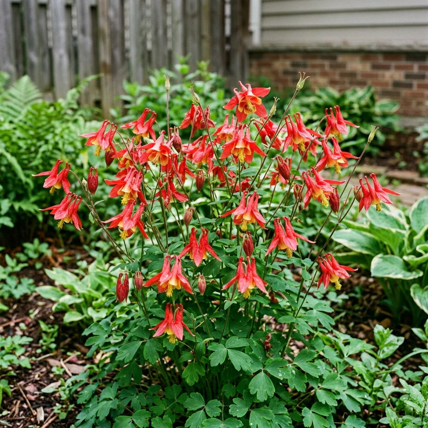
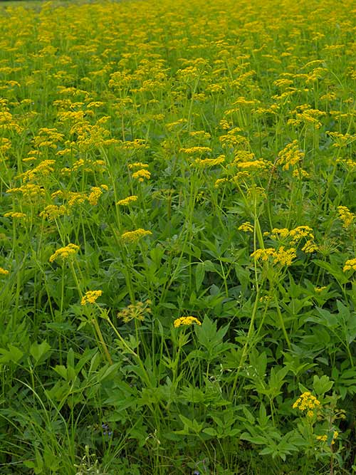
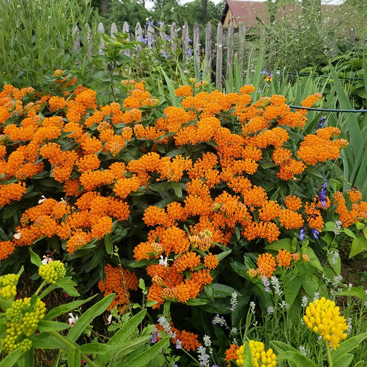
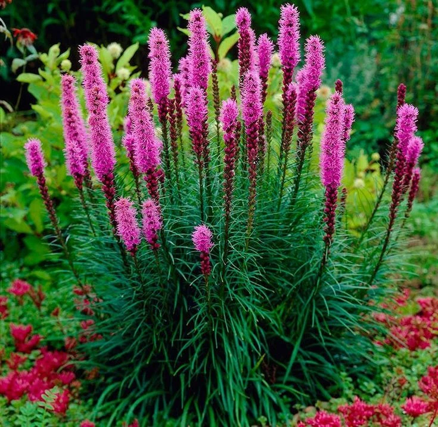
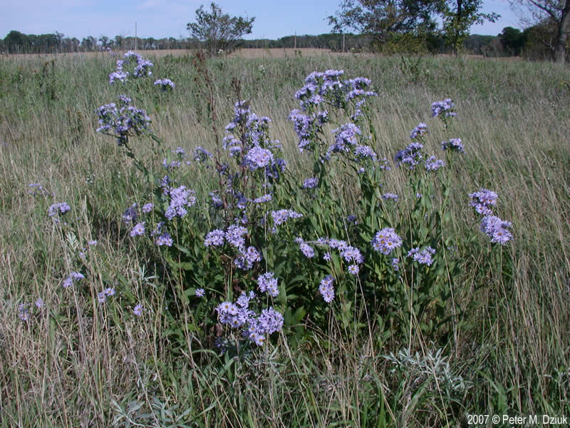

🌼 Native Pollinator Garden
Converting a ~1-acre residential corner lot in North Huntingdon Township, PA from maintained lawn to native pollinator habitat — built for monarchs, swallowtails, and native bees, and documented in the open so anyone planning similar habitat can reuse the work.






The nectar relay, spring to frost — one species from each stretch of the season.
Species table →
The full palette — photos, bloom, height, soil, juglone tolerance. Sort by any trait; filter to hosts, natives, or what's blooming now.
Bloom calendar →
Every bloom window, spring through the fall monarch migration, colored by flower.
West-slope map →
Interactive schematic of the first planting area — height bands, the juglone corner, butterfly territory.
Habitat record →
The habitat and compliance case on one page — host plants, nectar continuity, practices, and the IPMC §302.4 exemption.
The approach
- Straight species, no cultivars — northeast-ecotype seed, adapted to the local climate and photoperiod.
- Fall direct-sow — most of these natives are deep-taproot species that resent transplanting; surface-sown seed with winter stratification is the reliable path.
- Designed for butterflies — larval host plants (milkweeds, golden alexanders) clustered with nectar sources, and a bloom succession that runs into the fall monarch migration.
- Managed, not neglected — mapped planting bands, a documented palette, and a seasonal calendar. Stems stand year-round on purpose: swallowtails overwinter as chrysalises on them.
The project is pursuing Monarch Waystation certification through Westmoreland Pollinator Partners, the county's pollinator-habitat coalition (certified under Monarch Watch), with on-site habitat signage planned as the planting establishes.
The record
- compliance.md — the IPMC §302.4 cultivated-garden exemption and the standing-stem rationale
- species.md — the plant palette as a readable reference list
- gardenmap.md & gardendesign.md — the west-slope layout and the reasoning behind it
- plantingplan.md — the fall direct-sow protocol, per-species status, and the season calendar
- The repository — every change to the garden, as a commit log